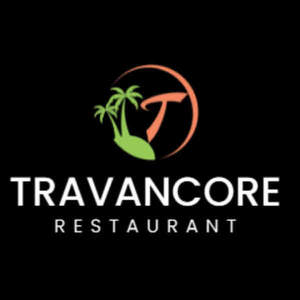
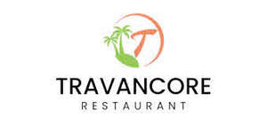

Trade Mark Journal No.2025/016 18 April 2025
UK00004148769 16 January 2025 (29,32,33,43)
Mark 1

Mark 2

- Class 29
- Seafood; Fish-based snack food; Soy-based food bars; Meat-based snack food; Vegetarian charcuterie; Vegetable-based snack food.
- Class 32
- Beers; Beer; Non-alcoholic beers; Craft beers; Flavored beers; Flavoured beers; Alcohol-free beers; Low-alcohol beer; Beer and brewery products; Bitter [Beers]; Bock beer; Non-alcoholic beer; Malt beer; Root beers; Craft beer; Root beers, non-alcoholic beverages; Frozen hops for brewing beer; Lagers; Beer wort; Barley wine [Beer]; Barley wine [beer]; Ales; Lager; Wheat beer; Flavored beer; Coffee-flavored beer; Black beer [toasted-malt beer]; Dried hops for brewing beer; Hop pellets for brewing beer; Ginger beer; Non-alcoholic beer flavored beverages; Beer-based cocktails; Beer-based beverages; Non-alcoholic beer-based cocktails; Non-alcoholic malt drinks; De-alcoholized beer; Ale; De-alcoholised beer; Root beer; Non-alcoholic wines; Hops (Extracts of -) for making beer; Extracts of hops for making beer; Black beer; Imitation beer; Low alcohol beer; Non-alcoholic malt beverages; Grape ales; Beers enriched with minerals; Stouts; Coffee-flavored ale; Non-alcoholic drinks; Carbonated non-alcoholic drinks; Cocktails, non-alcoholic; Non-alcoholic cocktails; Hop extracts for manufacturing beer; Cider, non-alcoholic; Kvass [non-alcoholic beverages]; Non-alcoholic wine; Non-alcoholic fruit cocktails; Non-alcoholic fruit drinks; Cola drinks; Non-alcoholic beverages flavoured with coffee; Non-alcoholic carbonated beverages; Kvass [non-alcoholic beverage]; Sarsaparilla [non-alcoholic beverage]; Non-alcoholic beverages flavored with coffee; Malt syrup for beverages; Non-alcoholic beverages; Beverages (Non-alcoholic -); Non-alcoholic beverages with tea flavor; Non-alcoholic flavored carbonated beverages; Cordials (non-alcoholic beverages); Non-alcoholic malt free beverages [other than for medical use]; Ginger ale; India pale ales (IPAs); Fruit flavoured carbonated drinks.
- Class 33
- Flavoured brewed alcoholic malt beverages, except beers; Flavored brewed alcoholic malt beverages, except beers; Alcoholic beverages except beers; Alcoholic beverages (except beers); Alcoholic beverages [except beers]; Ciders; Alcoholic beverages, except beer; Beverages (Alcoholic -), except beer; Alcoholic carbonated beverages, except beer; Wine coolers [drinks]; Pre-mixed alcoholic beverages, other than beer-based; Wine-based drinks; Wines; Alcoholic wines; Cocktails; Alcoholic cocktails; Whiskey [whisky]; Alcoholic fruit cocktail drinks; Malt whisky; Whiskey; Mulled wines; Prepared wine cocktails; Wine-based beverages; Aperitif wines; Beverages containing wine [spritzers].
- Class 43
- Fast-food restaurant services; Hotel restaurant services; Take-out restaurant services; Bar and restaurant services; Restaurant and bar services; Take-away restaurant services; Carvery restaurant services; Restaurant services; Restaurant reservation services; Restaurants; Booking of restaurant seats; Serving food and drink for guests in restaurants; Catering in fast-food cafeterias; Serving food and drink in restaurants and bars; Restaurant services for the provision of fast food; Tourist restaurants; Restaurant services incorporating licensed bar facilities; Fast food restaurants; Delicatessens [restaurants]; Providing food and drink for guests in restaurants; Provision of food and drink in restaurants; Providing restaurant services; Eateries; Restaurant information services; Providing food and drink in restaurants and bars; Restaurant services provided by hotels; Catering of food and drinks; Food and drink catering for banquets; Food and drink catering; Catering of food and drink; Catering (Food and drink -); Serving food and drink in doughnut shops; Brasserie services; Reservation and booking services for restaurants and meals; Cafe services; Hotel catering services; Food and drink catering for institutions; Providing food and drink in bistros; Hotel reservations; Takeaway food and drink services; Serving food and drink in Internet cafes; Take-away food and drink services; Cocktail lounge buffets; Takeaway food services; Take-away food services; Serving food and drink for guests; Resort hotel services; Making reservations and bookings for restaurants and meals; Catering services for company cafeterias; Providing food and drink in doughnut shops; Serving food and drinks; Café services; Catering for the provision of food and drink; Hotel reservation services; Reservation of hotel accommodation; Hospitality services [food and drink]; Take-away fast food services; Providing reviews of restaurants and bars; Hotel accommodation reservation services; Providing food and drink catering services for exhibition facilities; Guesthouse; Providing room reservation and hotel reservation services; Providing food and drink in Internet cafes; Catering for the provision of food and beverages; Beer bar services; Catering services for the provision of food and drink; Club services for the provision of food and drink; Providing food and drink catering services for convention facilities; Coffee bar services; Providing food and drink for guests; Providing food and drink catering services for fair and exhibition facilities; Private members dining club services; Self-service cafeteria services; Catering; Cafeteria services.
Jinson PAUL
A9 KERALA FOOD LTD
Representative: Ashok Sundaram